NL82-SNN-4
16
NL82-SNN-4
16
Volvo S60
1.6 T4 Kinetic 180 pk
2011
249.937 km
Handgeschakeld
180 pk
Incl. APK en afleverbeurt€ 5.900
Bekijk
Betrouwbare occasions in Den Bosch, sinds 1994
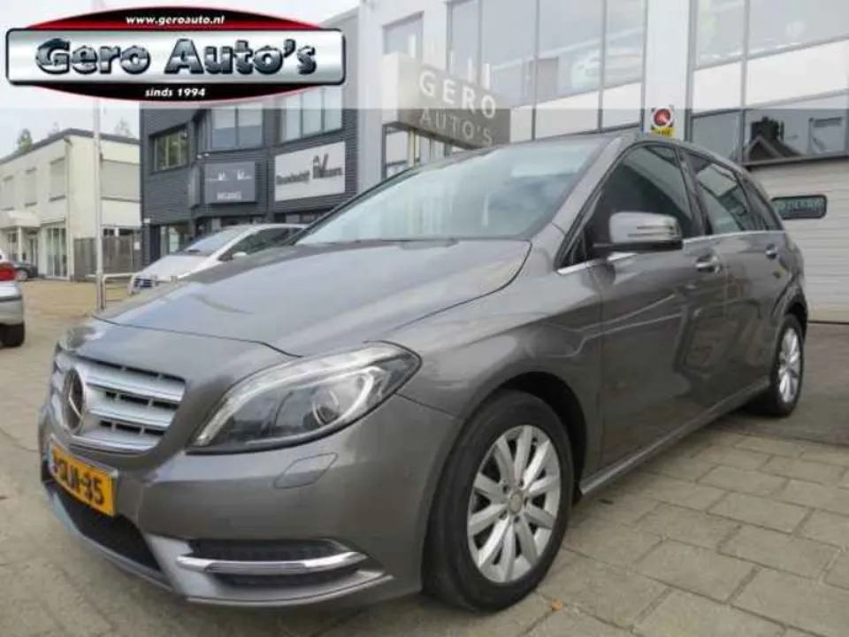
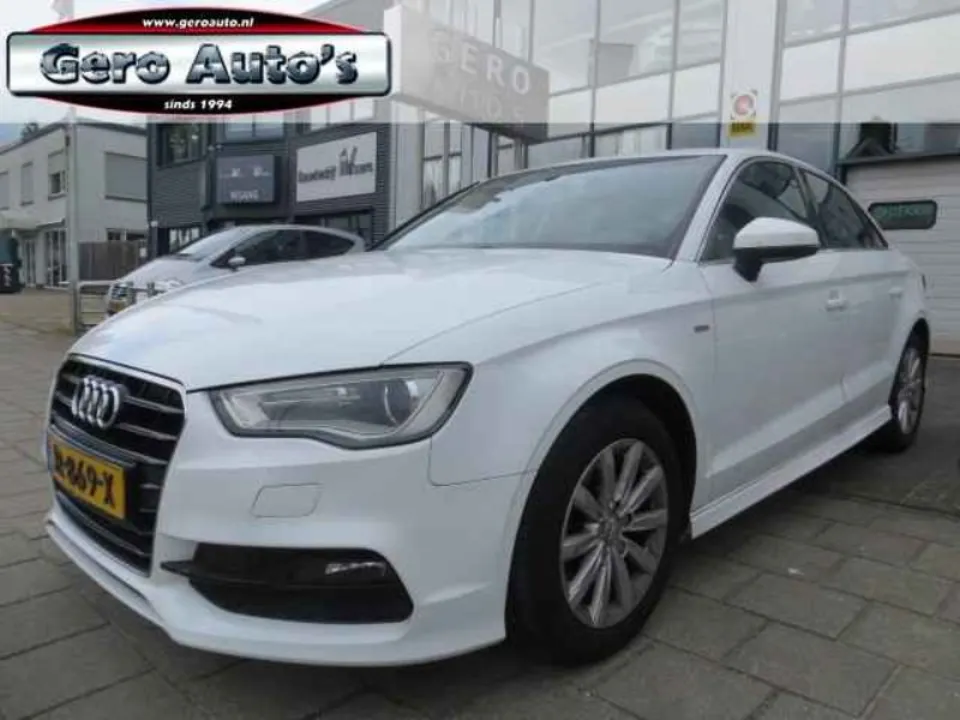

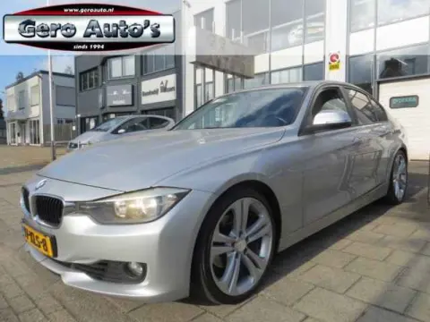

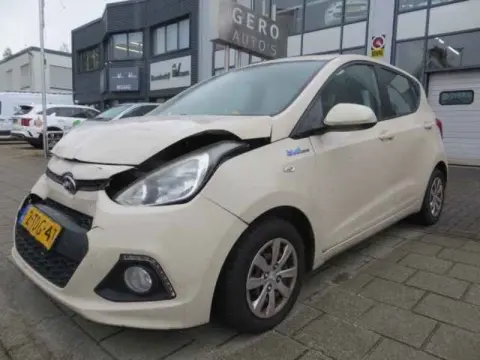
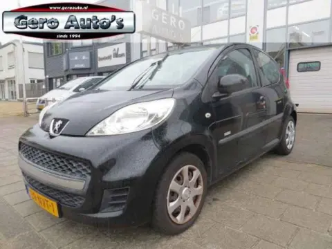
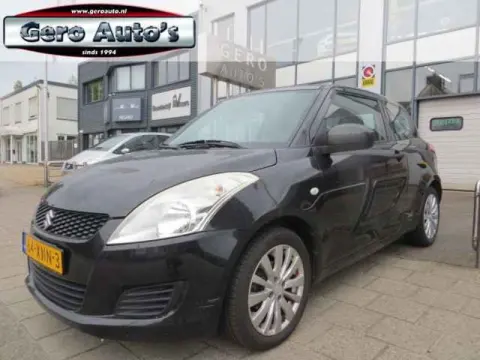
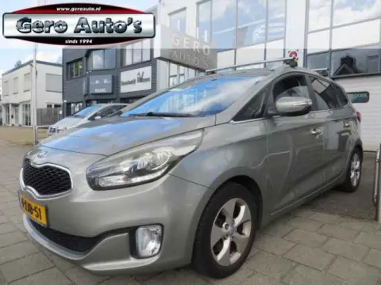
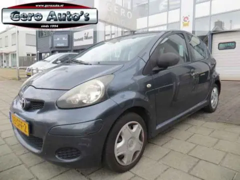

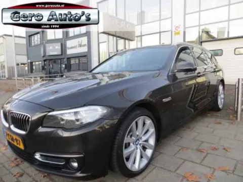

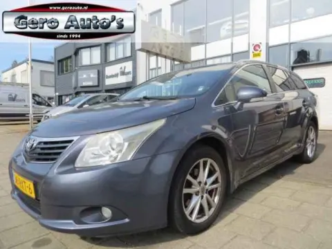
Vers binnen
NL82-SNN-4
16
1.6 T4 Kinetic 180 pk
 NL3-SLN-35
15
NL3-SLN-35
15
180 Ambition nl-auto
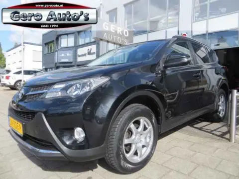
NLGN-705-P 202.0 Executive Business 4WD nl-auto
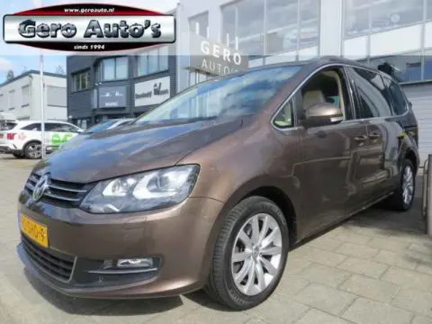
NL90-SHD-9 261.4 TSI Highline automaat nl-auto panorama dak
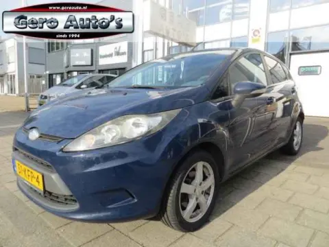
NL51-KFP-4 121.25 Limited 5 drs nw apk
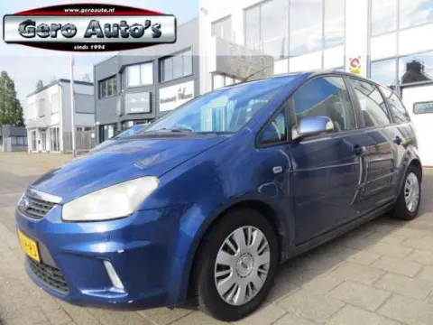
NL59-XH-RJ 131.8-16V Ghia nw apk
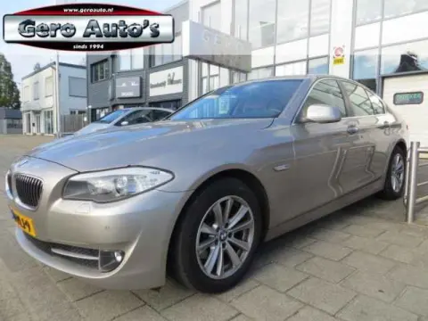
NL10-PLJ-9 17523i High Executive sedan 1 eigenaar
 NL1-XTF-79
21
NL1-XTF-79
21
1.0 move up! automaat 5 deurs nl-auto! 91 dkm airco cruise c
Onze drie beloften
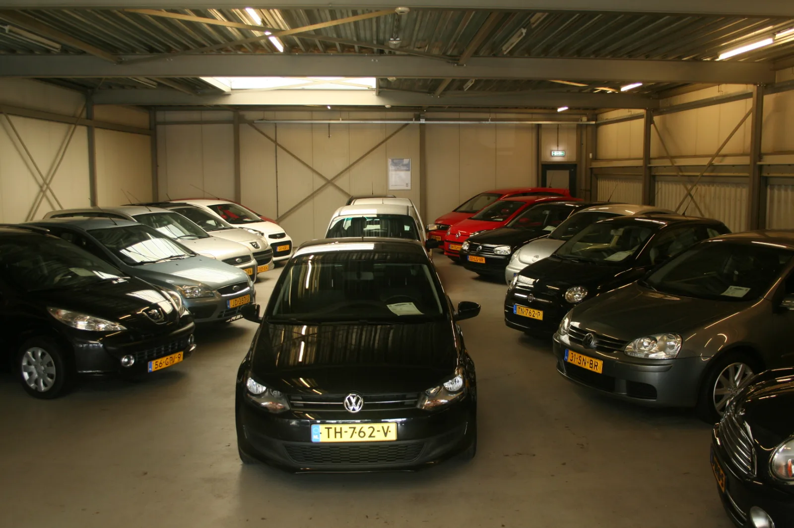
GoedgekeurdElke occasion krijgt een nieuwe APK en een afleverbeurt. De prijs op de kaart is de prijs die je betaalt.
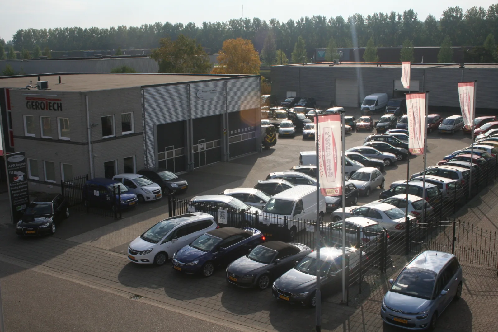
BOVAGAls BOVAG-lid bieden we 6, 12 of 24 maanden BOVAG- of Autotrust-garantie tegen meerprijs. Jij kiest hoeveel zekerheid je wilt.
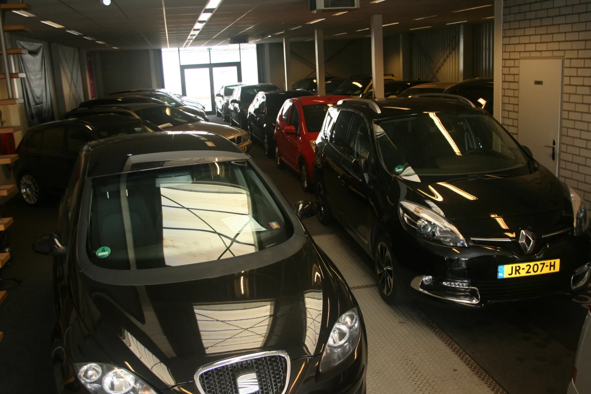
Eigen werkplaatsOnze eigen werkplaats staat achter de showroom. Voor APK, onderhoud en reparatie, en voor als er in de eerste weken toch iets is.
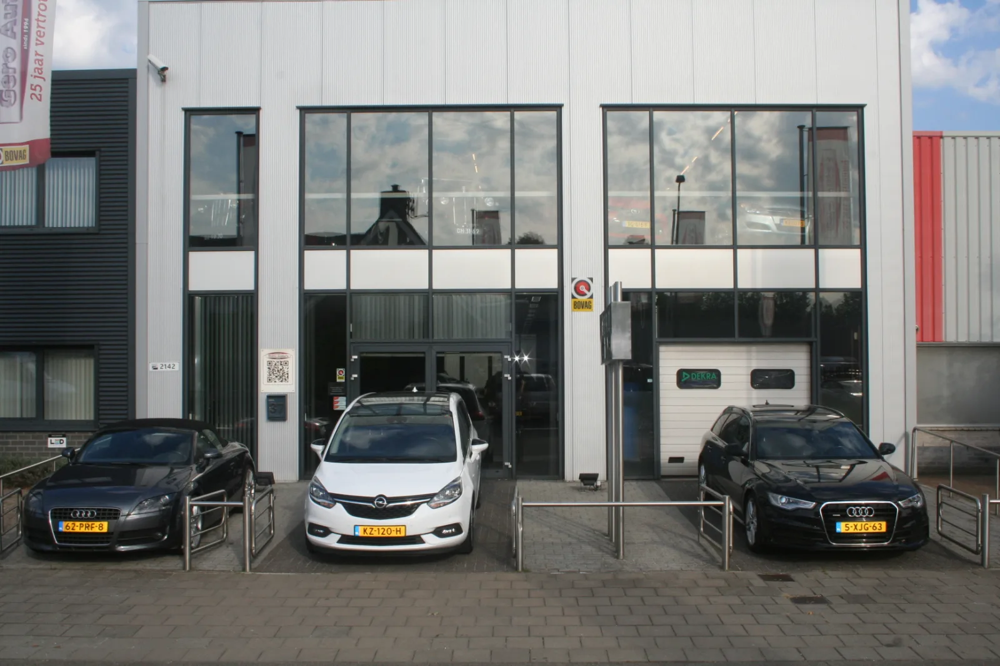
Ook voor je huidige auto. Uitlezen, banden, uitlijnen, schadeherstel. Je auto wordt desgewenst opgehaald en teruggebracht.
Plan een afspraakPersonenauto of bedrijfsauto, met of zonder een andere auto ervoor terug. Je krijgt direct een bod na een waardetaxatie op de zaak.
Vraag een bod aanWat kopers zeggen
Een aantal jaren geleden hier een Ford Focus gekocht. Na de aanschaf werd een motorstoring aan het gasklephuis netjes door de eigenaar opgelost. Inmiddels heb ik ruim 50.000 kilometer met de auto gereden zonder grote kosten en ben ik nog steeds erg tevreden.
Ron heeft mij keurig en eerlijk geholpen. Heel blij met mijn nieuwe auto. Ook na een paar duizend kilometer heb ik nog steeds niets te klagen.
Een auto gekocht bij Ron en zeer tevreden over zowel de auto als de service. Toen de accu na 14 dagen leeg was, heeft Ron deze kosteloos vervangen. Bedankt voor de goede service!
Een maand geleden hier een auto gekocht. Er waren een paar mankementen, maar Ronnie heeft deze heel netjes opgelost. De service en prijs waren top. Een betrouwbare garage met goede en vriendelijke service.
Afgelopen maand hier mijn eerste autootje, een Fiat 500, gekocht en ik ben supertevreden. Er werd zelfs nog een extra APK uitgevoerd voordat ik de auto meekreeg, terwijl de vorige APK nog ruim zes maanden geldig was. Ook werd mijn versnellingspookdop gratis vervangen. Erg vriendelijk geholpen en ontzettend blij met mijn auto!
In mei 2025 een Kia Sportage gekocht en ik kan niets aanmerken op de auto. Hij rijdt nog steeds goed, zonder gekke dingen of verborgen gebreken. Bij de verkoop ben ik heel goed geholpen door Ron en hij hield de auto zelfs nog een dag apart zodat ik er rustig over kon nadenken. Ik zou hier zo weer een auto kopen.
Ik had een auto gekocht bij Gero Auto's en na een week bleek dat de bodemplaat niet goed vastzat. Dit is keurig verholpen door Gero Auto's, zelfs op zijn vrije dag. Zeer tevreden over de service en de eigenaar is bovendien een aardige man voor wie niets te veel lijkt. Alles staat hier in het teken van tevreden klanten. Zeker aan te bevelen als je een occasion zoekt.
Netjes ontvangen en vriendelijk geholpen. Vanwege de afstand kon ik de auto dezelfde dag meenemen. Super service en zeer tevreden met mijn nieuwe auto.
Vanmiddag een auto gekocht en dankzij de goede service kon ik er dezelfde middag nog mee rijden, inclusief een nieuwe APK en afleverbeurt. Bedankt Ron voor de goede service!
Met heel veel vriendelijkheid, service en humor geholpen. We zochten een Fiat 500 en kwamen onaangekondigd op een zaterdagmiddag langs. Zonder problemen werd de halve showroom naar buiten gereden en werd er zelfs een auto van de eerste verdieping gehaald, zodat we rustig meerdere proefritten konden maken. Fijn dat mensen echt de tijd voor je nemen. Omdat we de auto snel nodig hadden, werd ook daar goed in meegedacht. Inmiddels rijden we met veel plezier rond en weten we dat we hier ook terechtkunnen voor betaalbaar onderhoud.
Vriendelijke man en goede service. Er wordt goed meegedacht en problemen worden netjes opgelost. Een fijne ervaring.
Aardige man en een fijne auto. Alles is netjes gedaan zoals beloofd. Voor nu een goede ervaring en zeer tevreden over de manier waarop alles is verlopen.
Vriendelijke eigenaar en goed te woord gestaan. Een prettige en duidelijke ervaring.
Superblij met onze nieuwe auto! Aardige eigenaar die goed met je meedenkt en bovendien een lekkere babbel heeft. Zeker een aanrader als je op zoek bent naar een leuke, betrouwbare en betaalbare auto.
Heel sympathieke en eerlijke mensen. De auto werd vooraf keurig beschreven en als er iets is, wordt het ter plekke opgelost. Een groot voordeel is dat ze een eigen werkplaats hebben. Een hele goede ervaring en voor een volgende auto zou ik hier zeker weer komen.
We hebben een auto gekocht bij Gero, in principe zonder garantie. Toen we pech kregen en de auto direct kapotging, konden we na één telefoontje meteen terugkomen voor reparatie. Een week later konden we de auto gerepareerd en zonder extra kosten weer ophalen. Super service van Gero Auto's!
Super geholpen! Zelfs tot drie uur na sluitingstijd werd er nog uitgebreid geholpen. Een mooie en fijne auto voor een goede prijs en daardoor zeer tevreden.
Een al lang bestaande onderneming met een prettige eigenaar die professioneel en vakkundig overkomt. Service en klanttevredenheid staan duidelijk hoog in het vaandel. Een vertrouwd adres.
Topvent. Een Fiat 500 bij hem gekocht en zeer tevreden over zijn manier van handelen. Ik zou hier zo weer een auto kopen.
Voor de tweede keer hier een auto gekocht en opnieuw dik tevreden. Super service. Dank je wel, Ron!
Door met mij mee te denken en extra service te bieden, heb ik veel geld bespaard op mijn auto. De omgang met klanten is erg vriendelijk en informeel. Ik kom hier zeker terug.
Twee jaar geleden hier mijn auto gekocht. Een betrouwbaar adres met goede service. Een prettige ervaring en een bedrijf waar ik met een goed gevoel op terugkijk.
Goed bedrijf met een aardige en bekwame monteur/eigenaar. Reparaties worden voor een goede prijs uitgevoerd en de kwaliteit is uitstekend.
Ron is een eerlijke en oprechte man om zaken mee te doen. Iemand die je niet snel laat vallen. Ik kan Gero Auto's zeker aanbevelen.
Alle 24 reviews rustig nalezen? Ze staan op onze reviewpagina.
Bekijk het aanbodZo werkt het
Filter op merk, prijs, bouwjaar of kilometerstand. Elke auto staat er met alle foto's en specificaties.
Loop binnen of bel vooraf, dan staat de auto klaar. Proefrit maken kan altijd, ook met meerdere auto's.
Nieuwe APK, afleverbeurt en het tellerrapport zitten erbij. Vaak kun je dezelfde dag nog wegrijden.
Voor onderhoud, APK of een vraag kom je gewoon terug. Dat is precies waar de reviews over gaan.
Maaspoort, 's-Hertogenbosch
Loop binnen, maak een proefrit of bel vooraf zodat we de auto voor je klaarzetten.
Buiten deze tijden op afspraak, ook 's avonds en op zondag.